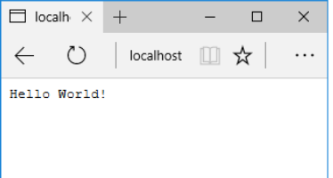
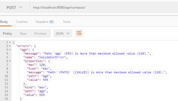

Introduction to HTML, CSS and Bootstrap
ECMA2015
CSS and Bootstrap
Lab-HTML
Introduction to Promises, Remote Repos and Node.js
Git Overview
Promises
Node
node_lab1
Web APIs and Express
Web APIs using Express
MongoDB and Mongoose
node_lab2
node-lab3
Unit Testing APIs
Testing Web APIs
api-testing-ES6
Authentication using JWT and Passport
Authentication using Express, JWT, and Passport
Server Side Rendering
Authentication-JWT
Enterprise Web Development
All labs's in Module
Lab-HTML
node_lab1
node_lab2

node-lab3

api-testing-ES6
Authentication-JWT